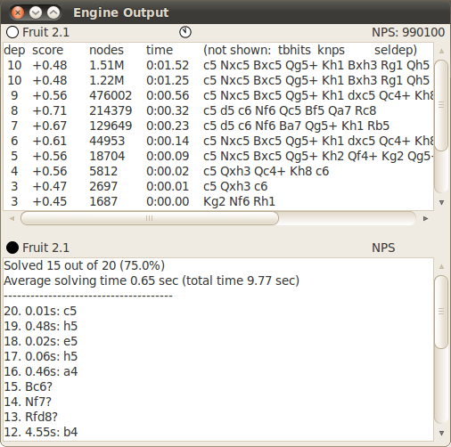
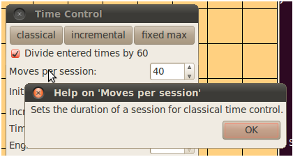
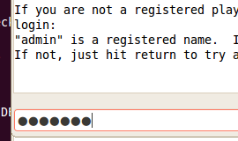
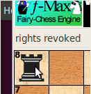
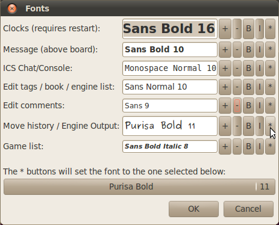
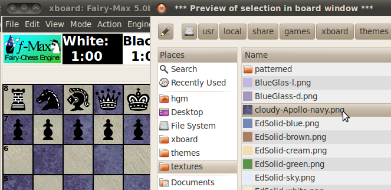
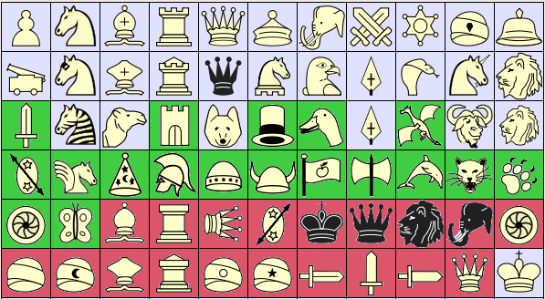
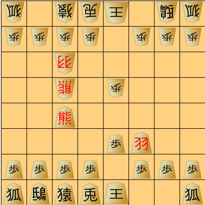
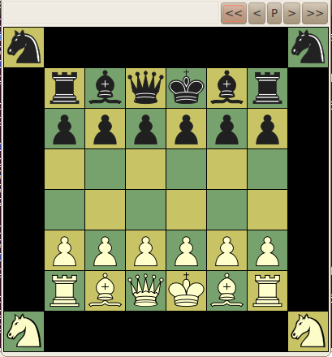

What is new in XBoard/WinBoard 4.9.0?
The following features are new in XBoard 4.9.0:

A new volatile option -epd will switch XBoard in EPD mode for the duration of the session.
In this mode all games will be terminated after a single move.
This move will then be compared with the best-move (bm) or avoid-move (am) fields
from the EPD position specification from which the game started,
and counters will be kept of the number of good and wrong solutions thus given by the engine.
XBoard can thus be used to run an EPD test suite, through a command like
"xboard -epd -mg 100 -lpf STS1.epd -lpi -1 -fcp crafty"
to solve the first 100 test positions on the STS1.epd file with the Crafty engine
at the default time control.
The results of the test suite will be reported in the second pane of the Engine Output window,
and as the 'match' result in the title bar:
finding a correct best move will be counted as a win, playing an avoid move as a loss,
and all other moves as draws.
In Edit Position mode, operating the mouse wheel above a square now creates a piece in that square,
or changes the identity of that piece, making it run through the entire set of pieces participating in the current variant.
This is especially useful in variants with many piece types,
where sweep selection becomes problematic due to lack of space to move the mouse.
Setting up a position required the right mouse button ('button 3' in Linux) to put new pieces on the board.
The option -monoMouse can allow XBoard to use the left button for this.
In that case clicking over an empty square will behave like it was a right-click,
and will create a piece in that square.
Clicking over an occupied square will select or grab the piece,
as usual for left-clicks.
A new option -positionDir can force the file-selector dialog that pops up in response to Load Position
to start browsing in the specified directory, rather than in the current directory.
This can be useful when you have a favorite set of positions from which you often start games,
e.g. for several material-odds positions.

All text labels in dialogs and the main pop-down menu items can now be right-clicked,
in order to pop up a text box with the description of their function from the manual.
The man page has been largely rewritten and re-organized to make sure most
items produce satisfactory help this way.
The spin controls in the Time Control dialog of XBoard's GTK build do not allow entering non-integer values,
which precluded setting base times like 0:30 (for 30 sec) or increments like 0.1 (sec).
To work around that there now is a divide-by-60 checkbox in that dialog,
which allows you to enter base times in seconds and increments in units of 1/60 seconds.
It was already possible for an engine to cause pop up of a message, or a simple question.
Now engines can modify their settings dialog after startup, and force it to pop up.
This is triggered by the 'feature done=N' command, where a meaning has been given to new values of N.
XBoard will now erase the engine's option list on receiving done=0,
so that the engine can redefine the settings, or even the options itself, by resending 'feature option' commands.
Ending such a resent option list with "feature done=1" will now cause the contents of an open settings dialog to be updated.
Ending it with done=2 will alert XBoard that the list of options itself changed,
and force it to close and re-open a dialog that was already open.
Ending with done=3 will even open a redesigned dialog when no dialog was up before,
allowing the engine to ask for attention.

The console from which XBoard was started was historically used as text window to interact with the Internet Chess Server.
But the ICS Chat/Console window now fulfills the same function.
So not being able to read from or write to the terminal is no longer a fatal error,
and XBoard can be started in ICS mode without terminal, provided the ICS Chat/Console window is open.
This window now also hides the password you are typing,
and prevents you from recalling it with the arrow keys.

XBoard has long since been made castling-aware, but the castling rights could only be fully controlled by pasting a FEN.
In Edit Position mode a simplistic heuristic was used to assign such rights:
King and Rooks on their normal starting square would be assumed to not have moved.
This is usually the case, but not always, and setting up those exceptional positions was not possible.
And set up positions never had the right to e.p. capture.
Now it has been made possible to grant or revoke castling or e.p. rights to arbitrary pieces.
By first selecting a Rook, King or Pawn in Edit Position mode with a left-click, and then clicking it again,
the assignment of rights to that piece will be reversed.
The new state of the piece will be displayed in the message field,
so you won't lose track.
By endowing a Pawn with rights you will indicate it has just been double-pushed,
and e.p. rights to capture it will be assigned to the position.
Kings and Rooks created by a right-click in a square will be assumed to have rights based on the old heuristic,
but Kings and Rooks put on their starting square by moving them there will be assumed to have moved.
A new option -installTheme has been added, which can be put into XBoard's master settings file
when installing a package with new piece images and/or board textures,
to make a selection item for this board theme automatically appear in XBoard's themes listbox.
This opens the possibility for easy packaging and distribution of board themes.

In the GTK build fonts have names that can be handled by mortals, like "Sans Bold 10"
for a 10-point bold sans-serif font.
It has thus become sensible to set them through a dialog.
(In WinBoard this has of course been long since possible.)
XBoard's new Fonts dialog allows you to type the name of a pango font in a text edit,
or operate four buttons:
to increase or decrease the point size,
or to toggle the 'bold' or 'italic' font attributes.
Operating the buttons changes the font name in the preceding text edit accordingly,
and actually displays that name in the font it represents,
so the user has a preview of what he is doing.
Each window type has its own font control,
so that the user can use a monospace font in windows where columnar output is expected
(such as the ICS Chat/Console,
use a figurine font where mostly moves are displayed (Engine Output or Move History), etc.
Sizing the window now not only affects the board part of XBoard's main window,
but also the fonts chosen in clocks and message above the board, making the clock and message area size too.
(Just like WinBoard has always been doing.)
This also makes it possible to size the board much smaller than it initial size,
as the default fonts get smaller as the board shrinks.
This eventually makes the board look just as it would look when you would start it in the final size.
This consistent board size is now saved in the settings file,
so that next time you will indeed start up with almost the same board as the sized one
(except some rounding of the square size to one of the 18 standard sizes).
For the fonts in other windows it is not so obvious that you want them to change when the board window is resized,
although the default fonts for these windows does depend on board size.
Therefore a more subtle algorithm is used for those:
XBoard keeps track of whether the font used for each size is the default for that size,
or a font that once was defined by the user through a command-line option or the Fonts dialog,
(and possibly transfered through the settings file).
Such non-default fonts will then be adhered to after sizing the board window
when no explicitly specified font for the new size did exist yet.
Meaning that you would only have to select a new font for each window once,
after which it will be kept no matter how you size the board.
Unless you take explicit action to select a separate font for each board size.
The move sound can now also be played when a new PV arrives in Analyze mode
(where normal moving does not take place).
A new option -analysisBell DELAY can specify a DELAY in seconds,
and any line of engine thinking output that arrives after this delay
will cause the move sound to be played.
Setting the value to zero will disable move sounds during analysis.

The GTK file chooser has been streamlined a bit.
To easily reach the piece images and board textures that are installed with XBoard's standard packages,
which keep their files in cumbersome-to-reach places like /usr/local/share/games/xboard/themes
the directories 'textures', 'themes' (for piece themes) and 'xboard' (for other data files)
have been added to the 'Places' list at the left side of the file chooser.
In addition, textures or piece themes that you select there
(by single as well as double clicking)
will be applied instantly to the board for a 'preview'.
This allows you to judge them in the context they would be used.
When you would finally decide not to use them after all,
by selecting another, or leaving the file chooser or Board dialog by pressing 'Cancel',
the board will revert to the original color and pieces.
So at all times you can be aware of exactly what you are OK-ing through the Board dialog.
(But... be sure the popup dialogs do not cover the board!)
The Board dialog allows you to add the current combination of graphics settings
(colors, textures, piece images)
to the list of predefined themes.
Occasionally you would want to fine-tune that list to your needs, however.
E.g. deleting themes you got tired of, re-ordering them,
or perhaps organize them as collapsable groups by adding "# GROUPNAME" and "# end" tags in the list.
Or add options to the theme not normally included,
or on the contrary remove options you don't want affected,
e.g. to create themes that only affect the board and not the pieces.
So far this could only be done by editing your settings file (the -themeNames option in it).
But now XBoard has a menu item to pop up a general-purpose edit window for this.
A similar Edit window can be called up by another menu item,
to alter the ICS Text Menu, stored in the settings file as the -icsMenu option.
This makes it a lot easier to add new buttons to it
(or delete the buttons you never use).
New variant support

The number of piece types in XBoard has been expanded from 44 to 66.
The order of the pieces beyond the first 22 in the -pieceToCharTable option,
which was never officially defined, (as those pieces were only used in Chu Shogi), is now established as well.
This ordering is depicted in the image.
XBoard distinguishes primary and secondary pieces (the latter indicated on purple background).
To make pieceToCharTables compatible with future expansion of the number of primary pieces,
a slash '/' in this table indicates that the pieces following it are from the secondary series
(except for King, which is always the last piece of each color).
These secondary pieces are assumed to be less generally useful,
satisfying very specific needs of some Shogi variants,
and would thus hardly be needed.
All pieces have a default image in XBoard, scalable to all square sizes.
WinBoard, however, does not have built-in bitmaps for most unorthodox pieces
for square sizes other than 33x33 ('petite'), 49x49 ('middling') and 72x72 ('bulky'),
and no bitmaps for the pieces on green or purple background in any size.
WinBoard can load images for all pieces from external bitmap files, however.
The name of these files in the pieceImageDirectory should be
pieceNN_SSo.bmp, pieceNN_SSs.bmp, and pieceNN_SSw.bmp,
(for the outline, solid and background image),
with SS the square size (e.g. 49),
and NN the number of the pieces in the pieceToCharTable ordering (0-65).
Pieces shown in black in XBoard are duplicats of other pieces in the default piece theme,
but in principle have different names for their image files,
so that in other themes they could be different.
(This is useful in Shogi, where the same piece sometimes has a different name written on it.)
Note that the Lance and Lion image occur on two different pieces;
This because the pieces originally using these images have special properties in XBoard.
The Lance is considered an alternative Pawn, and thus is assumed to promote
(with full promotion choice)
when reaching last rank.
The Lion is subject to rules that restrict its trading.
The duplicats are added so that these pictograms can also be used for pieces not having this property.
Some Shogi variants have (far) more than 26 piece types.
This makes it impossible to assign a single letter as ID for the piece,
for the purpose of writing its moves as SAN, or its occurrence in FEN.
In XBoard this problem has now been solved by allowing pieces to be represented by 'dressed letters',
a letter followed by a punctuation mark like an exclamation point or quote.
So if L represents one piece, L' represents another, and L! yet another.
In the future this could be extended with still other symbols (like L"),
but at the moment having 3x26 = 78 possible IDs,
still stretched more by the +L notation for promoted pieces,
seems more than enough.
XBoard already supported Shogi-style promotion of pieces,
where each piece promotes to a fixed 'partner'.
The assignment of a promotion partner was fixed, however:
each piece in the first 11 of the pieceToCharTable could promote to the piece 11 places further.
This was enabled by defining the ID for the latter as '+'.
For reasons of backward compatibility, this is still how things work by default.
But in XBoard 4.9 a piece can be indicated by multiple characters in the pieceToCharTable,
and the combination ^L defines a piece not only as a promoted type (like '+' would),
but also specifies it is the promoted partner of the piece with ID 'L',
which could be any other piece in the pieceToCharTable.
So any piece can potentially promote to any other,
redefining the fixed pairing between pieces in the first and second group of 11.
Another novelty is that pieces can also be defined with an ID *L.
This has the same effect as defining it as the (unpromoted) 'L',
but in addition defines the 10th piece of the secondary series as its promoted form.
This allows many pieces to have the same promoted form,
(as commonly occurs in large Shogi variants),
without the need to have multiple representations for that promoted version.
XBoard assumes by default that Pawns can promote to any piece participating in the variant
that is not a Pawn or King.
This then is the choice the user is offered through detour or sweep promotions.
It is left to the engine to refuse moves that would choose a non-allowed piece,
and often the default choice (the piece obtained when not dragging the Pawn through a detour,
or making a static click on the to-square)
would not be the strongest piece at all.
XBoard 4.9 supports a new extension of the engine communication protocol,
where an engine can send a 'choice' command
in response to a 'put' or 'lift' command sent to it because the user
performed a promoting move (to last rank, or to a square highlighted in magenta).
This 'choice' command conveys a list of piece IDs of possible promotion choices,
to which XBoard then will limit the choice offered to the user.
The first mentioned piece in this list will then be the default choice.

XBoard 4.9 has a new volatile option -inscriptions, which can define an UTF8 text string.
The characters in this string correspond to pieces according to the same rules as the -pieceTCharTable option.
Thus defined characters will then be written on top of the corresponding piece image.
In addition there is a new 'fall-back' rule for missing piece images in a user-defined -pieceImageDirectory:
XBoard will first try to find an image called White/BlackTile.svg before using the piece image from the default theme.
Together, this can be used for on-the-fly creation of Shogi themes.
One just provides an image of a blank tile of average size as the Tile.svg image,
and no image for all pieces that are intended to use this.
(For pieces like Pawn and King that need different tile size, you can still include dedicated images.)
The -inscriptions argument then indicates what kanji should be written on which piece.
The kanji are written in red when the piece was defined as a promoted one,
and rendered upside-down for the side playing downward when pieces are flipped Shogi style.
XBoard 4.9 is capable to handle moves with two 'locust captures',
i.e. where two pieces disappear on squares other than to which the moving piece goes.
It also adopts the convention that locust capture of an own piece on the rank where the King starts
will be considered a castling of the capturing piece ('King analog') with the victim ('Rook analog'),
the latter ending up next to, but on the other side of the former.
This allows the definition of castling (through a betza 'O' atom) on non-royal pieces,
such as the 'guarding' of (extended) Omega Chess.
For castlings where the King moves one step this method is also used,
to resolve the ambiguity with normal King moves.
Castlings defined through an 'O' atom are not necessarily with the piece furthest away from the King (or other castling piece),
but one or more 'j' prefixes on the 'O' can indicate how many squares away from the edge the castling partner is located.
Another novelty is the use of an 'ii' prefix to Pawn moves,
indicating a move that can only be made when the Pawn is on the rank just in front of the one where it starts on.
This can be used for the often encountered rule on 10-rank boards that Pawns can be pushed 1, 2 or 3 squares from 2nd rank,
but still 1 or 2 squares from 3rd rank, as in Wildebeest Chess.
The 'i' modifier has also been given a meaning for its appearence in continuation legs
(where its meaning as move for virgin pieces only makes no sense):
it can be used on sliding continuation legs to indicate the move has to be equally long (in basic steps)
as the preceding sliding leg ('i' standing for 'iso').
This allows for instance definition of slider rifle captures.

XBoard 4.9 supports inaccessible squares, displayed in black.
These can be used as fillers to fit non-rectangular boards in the display of XBoard.
E.g. the Omega-Chess board with the dangling Wizard squares can be realized
by defining a 12x12 board, and making all edge squares except the corners inaccessible.
In FENs these inaccessible squares are indicated by asterisks '*'.
In Edit Position mode you can create inaccessible squares by dragging empty squares off board,
but you can also fill them again by moving pieces or empty squares to them.
Clearing the board leaves the inaccessible squares as they are.
A new option -fen can define an alternative starting position
(from which the board size will be deduced).
This could already been done by specifying a position file through -lpf,
but the -fen option can do it directly from the command line, without the need for a separate file.
A new option -men can redefine moves of the pieces,
like the VariantMen tag does in a PGN file.
Its value can be a semicolon-separated list of piece ID : Betza move description pairs,
like Q:KGH;B:mBcaibB.
Both the -men and -fen options are volatile,
and apply only as long as the New Variant dialog is not used to select a variant.
XBoard's game parser should now understand traditional Shogi notation, as in .kif files.
It would understand those both in UTF8 and Shift-JIS encoding.
This allows you to directly paste Shogi games into XBoard.
XBoard will always save games in PGN format, though.
-
Fix crash on using Game List Tags dialog when Game List was not up.
-
Fix Browse buttons in Tournament Options dialog.
-
Fix file-type drop-down in Xaw file-selector dialog.
-
Fix crash on pasting garbage FEN.
-
Fix crash on loading empty PGN file.
-
Fix hanging on non-existent texture file (XB).
-
Fix spurious copying instead of moving in Edit Position mode.
-
Do not delay showing book changes while editing book.
-
Fix spurious clearing of Engine Output panes when PV walking.
-
Fix remembering tourney file and (WB) ticking of auto-step boxes in Tournament Options dialog when using Continue Later.
-
Ignore Continue Later button in Tournament Options when match in progress.
-
Fix closing of Error popup from Tournament Options dialog.
-
Prevent popup of Time Control dialog during game in XBoard.
-
Improve horizontal sizing of menu bar by better clipping of the menu names.
-
Fix date measurement in -addMaster option.
-
Wait for engine when switching to Edit Game mode when first engine is thinking.
-
Fix defaulting of second engine to first when UCI flag or directory specified (XB).
- Cosmetic
-
Print mate scores in #N format also in message field.
-
Fix sorting of #N mate scores in Engine Output window (where smaller N is better).
-
Show moves as SAN in Edit Book window.
-
Display exclusion header in Engine Output window only for engines that support move exclusion.
-
Gray-out Machine Match menu when match already scheduled for termination.
-
Update user logo when username is changed.
-
Prevent old logos from remaining (partially) visible when new one does not exist or has deviant format.
-
Use result mentioned in game to reconstruct missing PGN Result tag, rather than considering it 'unfinished'.
-
Fix highlight clearing in Edit Position mode.
-
Fix highlighting of last move after rejection of premove.
-
Improve pointing of highlight arrow and its erasure.
-
Fix thick border around saved diagrams (WB).
-
Ignore grabbing / selecting opponent pieces in Analyze mode.
- GTK build
-
Provide OK and Cancel buttons in top-level windows (that want them) for GTK build.
-
Fix periodic updates during analysis for GTK build.
-
Fix highlighting text in Engine Output and Move History windows GTK build.
-
Repair flashing of moved piece in GTK build (flaky!).
-
Allow default context menu to appear on 'off-target' right-clicks in GTK build.
-
Define mnemonic keys for items on menu bar.
-
Remember last browsed folder per file type rather than globally in GTK build.
- OSX App
-
Save settings on quitting through menu in OSX App.
-
Fix behavior on case-sensitive OS X file systems.
-
Fix creation of spurious XBoard instances on OS X.
- ICS and zippy mode
-
Fix crashing of Xaw build in ICS-zippy mode when opponent kibitzes and chat window is open.
-
Fix spurious undo at start of ICS game in zippy mode immediately after previous game was resigned.
-
Fix width of secondary board (for ICS background observe) in the GTK build.
-
Logout from ICS after engine failure in zippy mode.
-
Prevent bell character from being printed in ICS Console window.
- Variants
-
Fix behavior of engine-defined castling moves w.r.t. board holes and King rank.
-
Fix e.p. capture of triply-pushed Pawns.
-
Fix accepting illegal drops with legality testing off.
-
Fix higlight-induced promotions (moves to squares marked purple by the engine).
-
Fix sweep-promotion problems (black Pawns in Shogi, up-clicks in from-square, spurious promotion popups).
-
Fix spurious promotion suffix on drop moves parsed after a promotion move.
-
Fix sending of spurious 'lift' command to engine on deselecting a piece.
-
Fix parsing of SAN moves for pieces with redefined moves when legality testing is off.
-
Fix pasting FENs that start with an inaccessible square.
-
The GUI book code can now handle up to 48 (unpromoted) piece types, and boards up to 256 squares.
-
Allow promotion choice in variant ASEAN (to support the corresponding rule change).
-
Fix bare-king adjudication correction for Atomic, where a bare King beats an exploded one.
-
Fix pasting of moves immediately after starting from position file.
-
Reset old piece redefinitions when loading new game.
-
Fix setting of piece virginity from reading PGN.
-
Fix variant switching triggered by engine load.